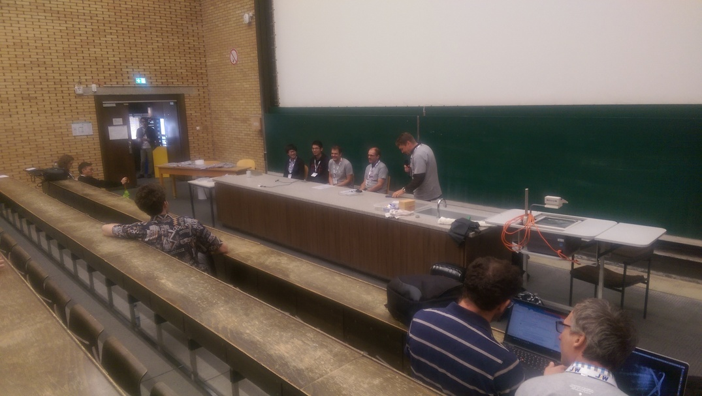
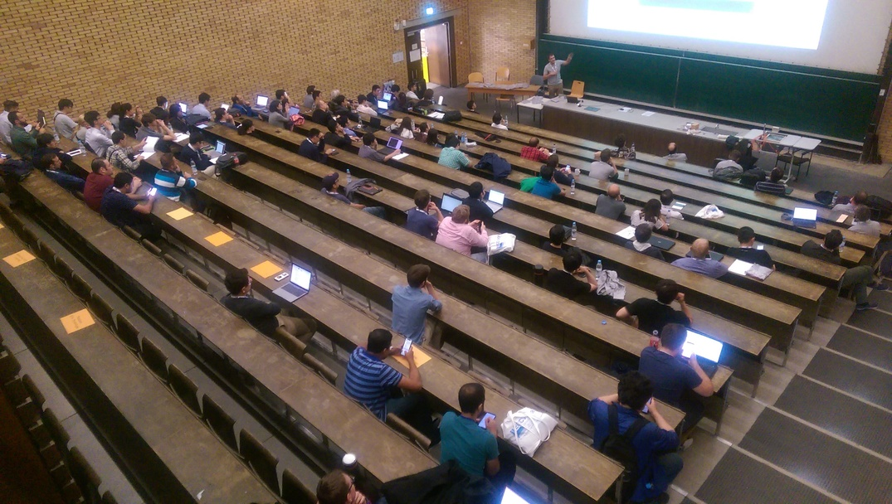
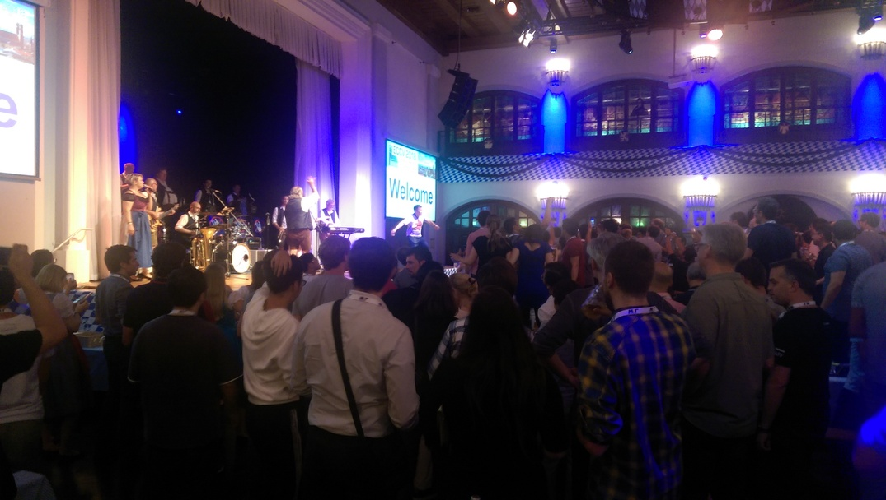
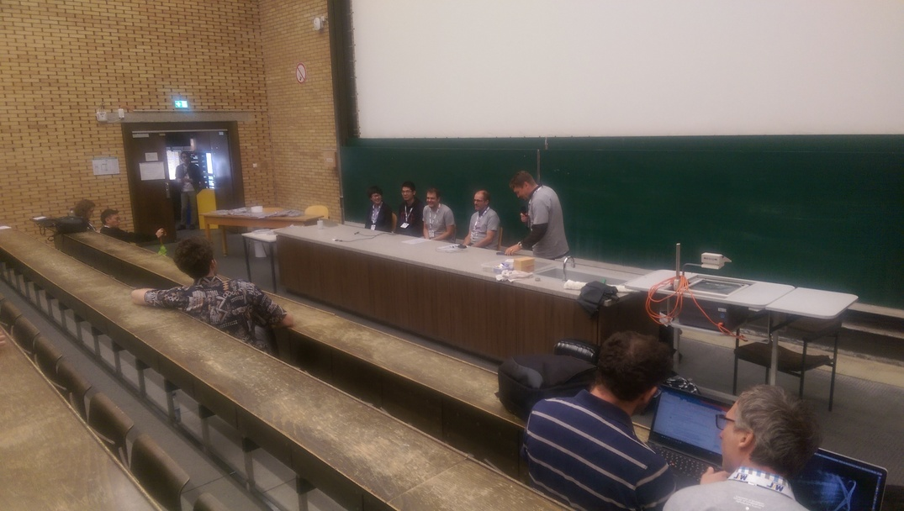
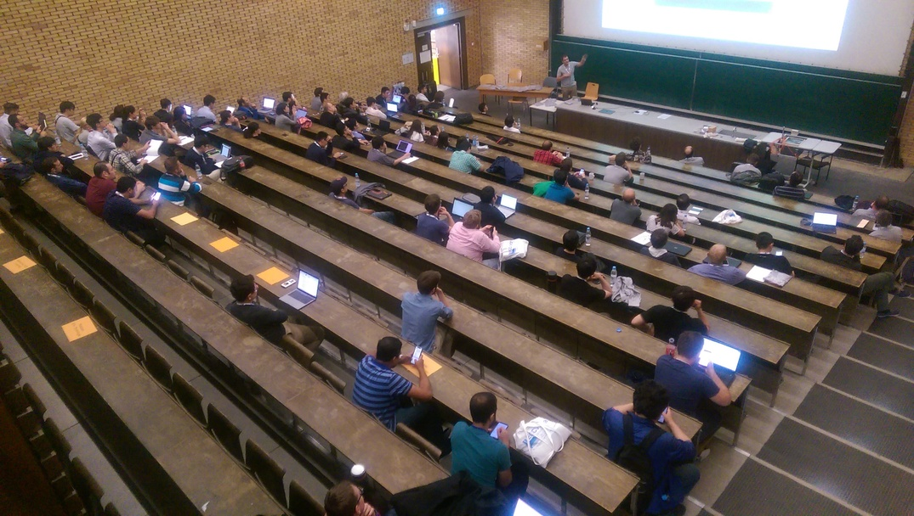
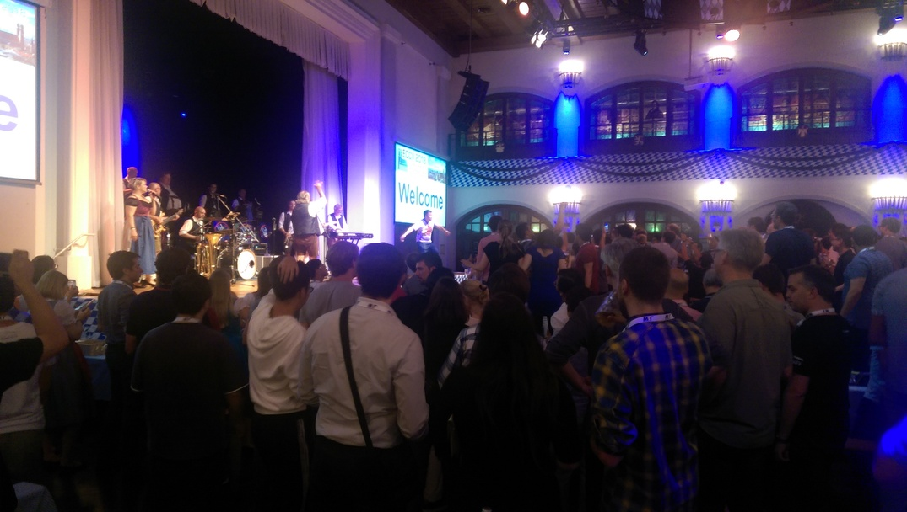
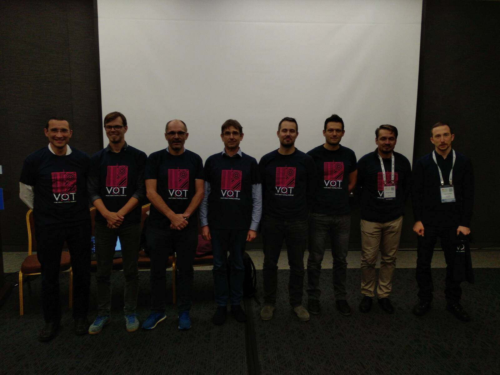
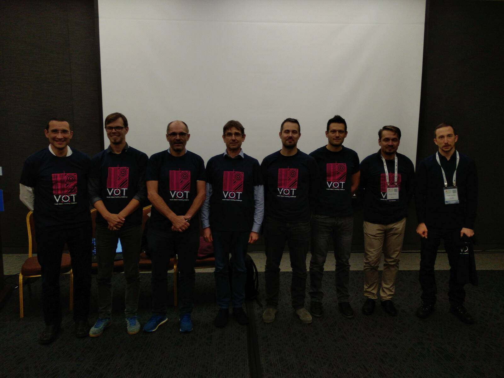

Welcome to the online exhibition celebrating 10 years of the Visual Object Tracking Challenge!
Visual object tracking is a crucial task in computer vision, with applications ranging from video surveillance and driver assistance systems, to augmented and virtual reality.
Over the past decade, the Visual Object Tracking Challenge (VOT) has become a major benchmark for the evaluation of object tracking algorithms,
attracting the participation of researchers from around the world.
This short exhibition showcases the evolution of object tracking techniques through the perspective of VOT workshops.
We hope that this exhibition will provide an informative experience for all visitors,
and inspire you to continue pushing the boundaries of visual object tracking research.
In the beginning there was a methodology ...
The VOT initiative was established to address the absence of standard evaluation for visual object trackers. The idea for the initiative was formed when a paper on evaluation methodology for visual object tracking was presented at a Computer Vision Winter Workshop CVWW2013. The first VOT challenge was carried out as part of the VOT2013 workshop held at the International Conference on Computer Vision (ICCV2013) in Sydney, Australia.
The initial challenge used a single RGB dataset of 16 sequences annotated with axis-aligned bounding boxes as it was standard in tracking community at the time. Sequences we also annotated with per-frame attributes. The challenge received 27 submissions by 59 authors from ten countries. The participants used a dedicated evaluation toolkit developed for the challenge to download the dataset and run the experiments. Results were then sent to the organizing committee.
Rolling on and gaining momentum
Encouraged by the marked success of VOT2013, the challenge was evolved and repeated in the following year. The second VOT challenge refreshed the dataset with additional sequences and introduced the first attempt to improve limitations of axis-aligned bounding boxes by introducing rotated bounding boxes. The evaluation toolkit supported a new integration protocol called TraX that offered more flexible experimental setups and faster execution. The results of the challenge were presented at a workshop at the European Conference in Computer Vision (ECCV2014) in Zurich, Switzerland.
The challenge received 36 submissions by 65 authors from ten countries. In contrast to the first challenge, where no specific methodology was trending, the second challenge declared the raise of trackers based on correlation filters. These trackers were very fast and versatile.
Deep learning meets visual tracking
The third challenge introduced a new evaluation measure that combined the two aspects, benchmarked in previous challenges: robustness and accuracy. The toolkit was upgraded to support this new evaluation. The dataset was again refreshed and enlarged to 60 sequences. A new sub-challenge addressing thermal-image-based tracking was introduced to promote the specific nature of different data modalities. The results of the challenge were presented at a workshop at the International Conference in Computer Vision (ICCV2015) in Santiago, Chile.
The challenge received 86 submissions by 155 authors from 14 countries. A large part of the submissions utilized correlation filters, but the winning tracker was already using deep learning detector methodology. Compared to other trackers, this tracker was more robust, but at a cost of being much slower.
Consolidation and reannotation
The fourth challenge introduced a new annotation procedure for the short-term RGB tracking dataset. All targets were manually per-frame segmented. The segmentation masks enabled objective bounding box fitting, thus avoiding the human annotator bias. The thermal sub-challenge was also organized. The results of the challenge were presented at a workshop at the European Conference in Computer Vision (ECCV2016) in Amsterdam, Netherlands.
The challenge received 92 submissions by 169 authors from 18 countries. The primary methodologies remained deep learning and correlation filters that received performance boost by using more descriptive (deep) features to work with.
Measuring real-time
The fifth VOT challenge made the TraX protocol a central building block for integrating trackers with the toolkit. This enabled a more realistic real-time experiment with frame drops. The dataset was again refreshed and a sequestered dataset was introduced for winner identification to avoid public dataset overfitting issues. The results of the challenge were presented at a workshop at the International Conference in Computer Vision (ICCV2017) in Venice, Italy.
The challenge received 52 submissions by 123 authors from 14 countries. A slight drop in the number of submissions was witnessed due to a more complex tracker integration and running a single challenge. On the other hand, a proper real-time experiment highlited the performance benefits of ceratin methods, espectially correlation filters and Siamese deep models.
Evaluating long-term tracking
The sixth challenge introduced a long-term tracking category that was again based on prior research work on evaluation methodology. The evaluation toolkit required substantial changes to address the long-term tracking specifics, such as re-detection. For the same reason, a dedicated dataset was constructed to contain many occlusions and targets leaving the field of view. The results of the challenge were presented at a workshop at the European Conference in Computer Vision (ECCV2018) in Munich, Germany.
 





The challenge received 87 submissions by 195 authors from 16 countries. In contrast to previous years, a wider use of localization-trained deep features and deep trackers based on Siamese architectures was observed in addition to bounding box regression. These architectures enabled larger search windows and could thus locate fast-moving targets. In long-term tracking, the benefits of robust redetection methods became apparent.
Going multi-modal
The seventh VOT challenge expanded the list of sub-challenges with multi-modal sequences. Two new sub-challenges were introduced in addition to the RGB short-term and long-term challenges that received dataset updates. The thermal sub-challenge that was paused for two years has resumed as RGBT sub-challenge and a RGBD sub-challenge was introduced to facilitate research in depth-based tracking. The toolkit and the TraX protocol were extended to support multi-channel sequence frames. The results of the challenge were presented at a workshop at the International Conference in Computer Vision (ICCV2019) in Seoul, South Korea.
 

The challenge received 81 submissions by 219 authors from 17 countries. Extensive use of deep learning was observed, some trackers combining multiple pre-trained models for improved performance. Semantic segmentation was used by top trackers to improve their accuracy, making clear that the field of visual tracking was ready for more accurate groundtruth format.
Tracking with segmentation
The eight challenge introduced target position annotation by segmentation masks. The goal was to promote segmentation-based tracking and thus push towards development of highly accurate trackers. This required minor changes of the TraX communication protocol. The evaluation toolkit was extended and re-written in Python, following the community-wide programming language shift. Similarly to the previous year, four sub-challenges were run, short-term, long-term, RGBD, and RGBT. The results of the challenge were presented at a virtual workshop at the European Conference in Computer Vision (ECCV2020).
The challenge received 58 submissions by 131 authors from 14 countries. Despite the main challenge shift towards segmentation-based tracking and the instability caused by the pandemic, the challenges were well attended. The submissions presented highly interesting solutions and while pure segmentation trackers were scarce, it became clear that performance can be improved by combining bounding-box trackers with post-hoc target segmentation and that deeper integration should be considered.
The rise of transformers
The ninth VOT challenge was again about consolidation. The core RGB short-term dataset was updated according to the established method of removing easy sequences and introducing sequences that increased diversity. The long-term and RGBD sub-challenges were also organized with no changes to their datasets while the RGBT sub-challenge was put on pause. The results of the challenge were presented at a virtual workshop at the International Conference in Computer Vision (ICCV2021).
The challenge received 71 submissions by 157 authors from 15 countries. From the methodological perspective many well performing trackers used attention blocks, popularized by transformer architectures. These methods handled large motions and appearance changes and were also fast enough to be used in real-time.
Towards the tracking multiverse
The tenth VOT challenge introduced the highest number of sub-challenges since its beginning, the short-term challenge was evaluated on segmentation and axis-aligned bounding box trackers, and both challenges also included realtime counterparts. The short-term dataset was refreshed with new sequences. The RGBD dataset was used for RGBD and Depth challenges, both now using short-term evaluation methodology. The long-term sub-challenge introduced an entirely new dataset. The challenge results were presented at a workshop at the International Conference in Computer Vision (ICCV2022) in Tel Aviv, Israel.
The challenge received 93 submissions by 180 authors from 11 countries. After two years of virtual workshops, this year's edition was a hybrid event. The interest in visual tracking has again been gaining momentum. At the same time the research in visual object tracking is increasingly interacting with other research fields like detection, segmentation, and reconstruction. These kinds of interactions will likely shape the convergence of methods in the future.
Community testimonials
In the span of a decade the VOT challenges impacted carreers of many researchers. We have reached out and are happy to have received feedbacks. The call is still open. If you would like to contribute with your own thoughts, let us know and we'll add them to the list below.
Datasets, tutorials and source codes from the VOT Challenge portal are a great help for students in the course "Artificial Intelligence Systems" that I teach and projects. I even hold competitions among students and they try to improve the results of the winners of the VOT challenge. The VOT initiative team is amazing! Congratulations! I wish you great success!
We - my PhD advisor and myself - joined this great community and challenges from 2016 until 2018. VOT Challenge motivated us as researchers who are curious about visual tracking because it increases the visibility of innovative and working solutions, and provides a unique benchmarking platform that has continuously raised the bar on scientific evaluation and brought a novel perspective to evaluating short- and long-term tracking. Following the challenge every year helped us zoom out and understood what was needed to go beyond the boundaries of the state-of-the-art family of trackers. Moreover, being able to access data and tools that the VOT community provided was easy and handy to ablate approaches. Joining the challenge and becoming a winning team is a great experience that connected us with enthusiasts in the field. We are grateful to this meticulous organization for making our research more visible to a large extent.
The VOT workshop had an important influence on shaping my PhD path, and consequently it showed me a model of how to conduct research in visual tracking. During the work towards my PhD thesis, my group and I targeted the VOT workshop as a major event to submit papers and discuss ideas. I had the privilege of presenting a paper at the workshop in each of the three years of my PhD. VOTs also hosted significant moments of my career, of which I attach two pictures: my first conference presentation of my very first first-author paper, happened at VOT2019; and my first research award, at the (unfortunately virtual) VOT2021. I am grateful to the organizers for giving me the opportunity of living such experiences. Our confidence in the event and in the expertise of the organizing committee was not just because of the VOT challenge’s popularity in computer vision, but also because we always received detailed and useful feedback from the reviewers and participants, even better than the one got from the main conference’s reviewers. I wish you (at least) other 10 successful editions of the VOT challenge!
There is no doubt that the VOT Challenge has continued to push the field of tracking through thoughtful organizations over the past decade. In the 10th VOT Challenge in 2022, I am very excited to see that our AOT algorithm based on segmentation tracking achieves a robustness beyond the bounding-box tracking algorithms for the first time. I believe this breakthrough will promote another development in the tracking field.
Anyone who's tried to read and compare tracking papers from before 2013 will immediately appreciate the importance of the VOT challenge. The existence of a standard, representative benchmark has been critical in enabling the rapid, positive progress of the field. While it's important to remember that benchmarks are primarily a means for evaluating scientific hypotheses, it's undeniable that healthy competition has also helped drive the advancement of object tracking over the past decade. The people behind the challenge have been reliable, selfless and indefatigable over the years, not only organising the annual competition, workshop and report, but also working to continuously improve the challenge in response to the needs of the community. They must be congratulated and thanked for this mammoth effort that has benefited the field as a whole.
Thanks to the VOT Challenge for building an excellent community of researchers interested in visual tracking. The VOT Challenge is one of the most watched competitions in visual tracking. Nowadays, visual tracking is increasingly essential in smart cities, autonomous driving, robotics, and more. We believe that the VOT Challenge will attract more researchers in the future to help advance the AI era together.
Since 2014, I've been an active member of the VOT community. At first, I participated as a challenge competitor, but later became a committee member as well. This allowed me to develop tracking algorithms alongside the evaluation methodology, which had a positive impact on both sides. By understanding how trackers function and recognizing their limitations, helped us to create a strong performance evaluation methodology. Additionally, insights gained from developing this methodology helped us improve our trackers and make them more robust. Despite investing a considerable amount of time, being part of the VOT family has been a pleasure. VOT accompanied me throughout the whole period of my PhD and contributed greatly for being a great success.
The outlook
The community feedbacks and their participation played a crucial role in shaping the VOT activities, the datasets and the evaluation protocols. We are deeply grateful for their contributions. Standing 10 years after the VOT emergence, has tracking been solved? Well, a decade is a long time in computer vision - old questions are answered, new appear and various research fields have long since been converging, making amazing advancements. But tracking has not been solved in the 90s, when a paper with a cheeky abstract stated it might be, and it is not solved now. The goals have just become more ambitious. And this calls for a new evolutionary step in tracking challenges.